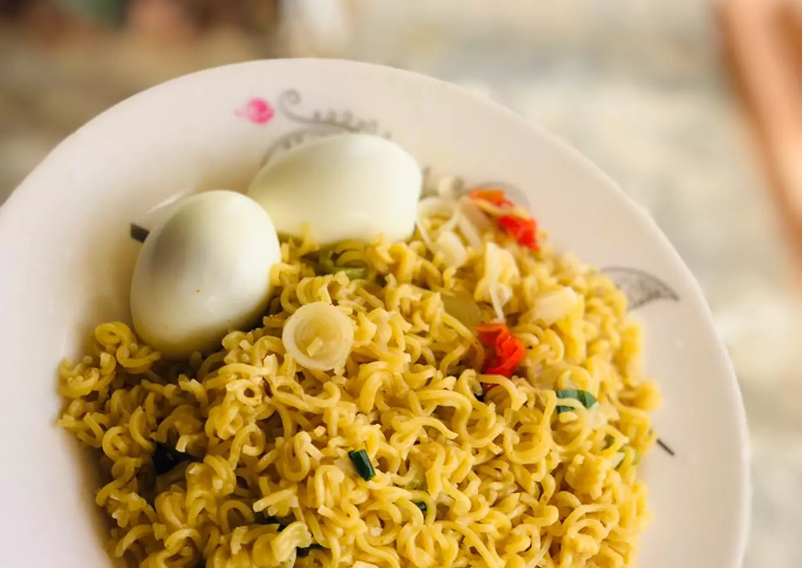

Bare Noodles

Noodles can also be eaten bare, without the Nigerian Jollof flavour. This
dish is for those days you do not have the desire to whip up something
that might take a while. In 10 mins, it is ready. It is best enjoyed with
boiled egg, chicken or turkey and your favourite cold beverage.
Ingredients
- 2 packs of instant noodles
- 6 tsp of of Soya oil
- 2 raw eggs
- 1 tsp Soy sauce
- 1 tsp ground black pepper
Steps
-
Boil 2 packs of instant noodles for 3 mins and set it aside. You can
either leave it wholesome or crunchy, depending on your preference.
- Boil the eggs.
-
Pour 2 tsp of Soya oil into a wok/frying pan, allow it heat up for 3
mins before pouring in the boiled instant noodles.
- Stir fry for 2 mins.
- Pour in instant noodles seasoning.
-
Serve with the boiled egg, any protein of your choice and your favourite
cold beverage.